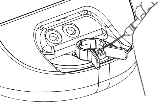

DaVitri™
User Manual

DaVitri model number: (01) 08437021820058
Caution: United States law restricts this device to sale by or on the order of a physician.
DaVitri is a medical device which automates the vitrification preparation of human mature MII oocytes. The system comprises the DaVitri Station, the DaVitri Dish and a software interface.
DaVitri Station: The Station is the mechanical/electrical component of the equipment. This table-top unit provides a touch screen control that activates the steps of the vitrification preparation cycle including fluid exchanges and environmental management. Prior to the activation of the vitrification preparation cycle, the operator loads standard commercial solutions from Kitazato kits that facilitate vitrification preparation with ES and VS at room temperature. There are no user-selected options. Once in operation, the Station will show progress of the cycle. The Station has an internal independent battery power supply which allows for operation without connection to an AC power source. The Station is supplied non-sterile and its packaging includes:
DaVitri Station which comprises the system housing, internal hardware, touch screen user interface, and embedded software programmed with the vitrification protocol. The System does not require any assembly by the user.

AC power connector, DC power converter (image is illustrative, item could vary depending on country of distribution).
NOTE: Electrical Isolation. The device is designed with a built-in electrical isolation system to ensure safety and protect the user from potential electrical hazards. This isolation is achieved through the medical grade power supply delivered with the system MeanWell GEM40I15-JP1.
DaVitri is ONLY compatible with vitrification media manufactured by Kitazato (VT601 – VT601US). Media should be stored following the Kitazato instructions for use.
DaVitri Dish: The DaVitri Dish is an individually packaged, sterile, single-use, disposable, cartridge. Once the user initiates the automated process using the touch screen, the system allows the user to load the dish into the station. The vitrification preparation reagents are manually loaded into two reservoirs in the dish. The priming process is started after the reagents are loaded into the fluid reservoir chambers in the DaVitri Dish (see instructions below). During priming, microfluidic pumps (in the station) control the flow of reagents to and from the central well, which is covered with a cap.

The DaVitri Vitrification System is indicated for use in the preparation and vitrification preparation of (MII) oocytes. The main intended use is to automate solution exchange in the vitrification procedures of mature (MII) oocytes prior to freezing in liquid nitrogen.
DaVitri has a single operational protocol:
Pre Vitrification: During this process, vitrification reagents are driven from the fluid reservoirs to the central DaVitri well. Fluid exchange takes place at the center well where the oocytes are located.
DaVitri has a single operational protocol:
The following diagram illustrates the clinical workflow steps of DaVitri for the oocyte cryo protocol, along with associated times.
DaVitri Dish package opened.
Dish inserted in DaVitri Station.
Vitrification reagents loaded.
“Start priming” pressed.
58 sec Ready for oocyte loading into the well.
Oocyte introduced.
“Start protocol pressed”.
Protocol ended.
Oocytes loaded on cryo storage device.
Cryo storage device in LN2
DaVitri CRYO Protocol
There are no contraindications for use of the DaVitri system.
The DaVitri Station is reusable and non-sterile. It should be disinfected after use per the instructions in this user manual (see 6.Cleaning and disinfection).
The DaVitri Dish is provided sterile in a pouch, and is intended for Single Use Only.
After use, discard each DaVitri Dish with the vitrification media, into a biohazard container, or wherever used lab consumables (i.e pipettes, petri dishes, needles) are discarded.
NOTE: Discard the DaVitri Dish loaded with used vitrification media. Do not empty the DaVitri Dish, or the fluid reservoirs prior to discarding.
Neither the sterility nor functionality of a reused DaVitri Dish can be guaranteed. An expiration date (or “use before” date) is marked on the label of each DaVitri Dish package. The DaVitri Dish has been sterilized by gamma irradiation. Packaging of the dish must always be opened under a laminar flow hood.
Location Usage: DaVitri should be used in an embryology laboratory under a laminar flow hood.
Inspect DaVitri Dishes: Prior to use of the DaVitri Dish, inspect the DaVitri Dish packaging for any defects. Do not use the DaVitri Dish if packaging is opened/damaged, or if DaVitri Dish sterilization or integrity is compromised.
Inspect DaVitri Station: Prior to use of the DaVitri Station, inspect the Station for integrity. If there is any damage to the Station, notify Overture Life, immediately.
Expertise: The System should only be used by embryologists or lab technicians who have expertise in handling oocytes and performing in vitro fertilization lab procedures.
For technical questions and support for the DaVitri System, email: info@overture.life.
The Station must provide a label like the one shown in the picture placed at the bottom of the device.
Where the following fields are used:
(01) GTIN (20) Revision (11) Date of manufacturing (21) Serial Number (422) Origin ES
DaVitri has the following operational modes:
1. Mains Mode: DaVitri is connected to a universal (110 - 230 VAC) power supply. This is considered the normal operating mode. Charging of the battery can be active or not.
2. Charging Only Mode: DaVitri battery is charging (connected to a power source.) DaVitri is OFF and no user interaction is possible.
3. Battery Mode: DaVitri is operating on battery power and is not connected to an external power source. DaVitri can function in this mode and run the operating protocol (vitrification prep) in this mode for at least 6 hours when the battery is fully charged. The system will not function if the battery is insufficiently charged.
The icon for battery status is located on the top right corner of the screen, and will be highlighted when the battery is charging.
To switch on the unit either in battery or mains mode the power button located at the back cover must be pressed longer than 1 second.
The power button located at the back cover is illuminated and will light in three different colors:
Green: Unit plugged into mains and the battery is charging. The unit is switched off.
Light Blue: Unit plugged into mains and the battery is charging. The unit is switched on.
Blue: The unit is on without being plugged into the mains.
To switch off the unit, the user can either use the touch screen and access to the power off icon or press the power button located at the back cover from 0.5 to 1 second. The switch off process will be triggered.
CAUTION: In case the unit does not respond to described power off processes, the unit can be safely switched off by pressing the power button longer than 2 seconds.
DO NOT USE this process unless the unit is not responding to the described switch off process as the software will be shut down in an uncontrolled manner.
Safely disconnect the equipment from the power source by removing the voltage plug from the back cover of the unit or by unplugging the power supply from mains. It is important to familiarize yourself with the specific termination procedures. The mean used to electrically isolate the device from supply mains is the power supply plug.
The DaVitri System has internal batteries which allow for use of the System without connection to an AC power source. The Station should be charged before use. The battery will continually charge while the Station is connected to the AC power supply. The power cord connection is clearly marked and is located at the rear of the Station. The charging time of the battery is 2h30min.
CAUTION: The battery cannot be replaced. The Station cannot be repaired or opened. There is no service operation allowed. In case of any fail the unit will be replaced by a new one by Overture Life.
-
SYMBOLNUMBER OF BARSPENDING HOURS OF USE
-
 4 bars5h to 4h of use pending
4 bars5h to 4h of use pending -
3 bars4h to 3h of use pending
-
2 bars3h to 2h of use pending
-
1 bar2h to 1h of use pending
-
0 bar (red)1h to 0h of use pending
Before starting a pre-vitrification cycle, ensure that the following equipment and materials are available.
The DaVitri Station works in conjunction with auxiliary lab equipment and consumables utilized by embryology labs.
The following is a list of equipment Overture recommends labs have on site to perform oocyte vitrification. This is not an exhaustive list:
- Laminar flow hood
- Stereoscope
- Incubator
- Liquid nitrogen storage tanks (Dewars)
- Liquid nitrogen source
- Pipettes
- Micropipettes
- Cooling rack
- Vitrification media (Kitazato - VT601 – VT601US)
- Cryogenic devices
- DaVitri dishes
DaVitri is ONLY compatible with vitrification media from Kitazato.
Prior to use, prepare the vitrification reagents as specified in the Kitazato protocols.
Prepare a cooling rack filled with liquid nitrogen.
CAUTION: Reagents should always be used at normal room temperature (~25ºC).
CAUTION: Do not place the Station on a hot surface.
CAUTION: Handle with care. Be careful not to drop the Station.
CAUTION: Always place the Station on a firm, level surface inside a laminar flow hood. Avoid tilting the Station.
CAUTION: Do not place the Station near a liquid nitrogen container.
CAUTION: Handle all equipment with dry hands.
-
1Perform an inspection of the DaVitri Station to ensure there is no visible damage to the unit.
-
2Perform visual inspection of the DaVitri Dish packaging, looking for any visual damage which might compromise the sterilization of the DaVitri Dish. If damage is seen, discard the DaVitri Dish and use an undamaged unit.
-
3Verify the DaVitri Dish being used is within the use-by date.
-
4Place the DaVitri Station onto the surface within the laminar flow hood in the embryology lab.
The DaVitri Station can operate using battery power, or while plugged into an AC electrical source. If using DaVitri while plugged in, connect the power cord to the back of the DaVitri station and to a 110 - 230 VAC electrical source.
INFO: If using DaVitri on battery mode, ensure the battery is fully charged. It is recommended to charge the battery when not in use or at least once a day.
-
5Switch on the power button located at the lower back of the DaVitri Station. The Station will power on and show a startup screen.

When turning on the DaVitri for the first time, a specific procedure is required for User registration:
-
1Open the email from cloud@overture.life. Follow the instructions and change your Login and password.
-
2Turn on the DaVitri by pressing the button located in the back of the device.
-
3Select your timezone.
-
4As requested in the display, connect the DaVitri to your wifi using the keyboard.
-
5After this step you will land on the DaVitri home screen, ready to start using it.
From the Home screen, the user can launch a new Vitrification preparation protocol by pressing the “New protocol” button. The user can also swipe down the arrow on the top of the screen to access the setting menu.
3.6.1. Instructions for storing the reagents
DaVitri is ONLY compatible with vitrification media manufactured by Kitazato. Media should be stored following the Kitazato instructions for use.
3.6.2. Instructions for using the reagents
Storage and preparation of media for vitrification should be in accordance with the reagent instructions for use. When reagents are loaded into the reservoirs of the DaVitri Dish, they should be at the temperature specified in the Kitazato instructions for use.
Refer to DaVitri Dish Instructions for use included in the DaVitri Dish package to have detailed information about labeling.
Before inserting the DV Dish in the DaVitri for a new vitrification protocol, label the Dish with the patient identification number on the right side of the reservoir following the standard operating procedure of the clinic.
-
aOnce all materials are gathered, select “Start”. Note: ES=Equilibration Solution (Kitazato Vitrification Kit), and VS = Vitrification Solution (Kitazato Vitrification Kit). The touchscreen will indicate when to “Insert the DaVitri Dish”.
NOTE: ES=Equilibration Solution (Kitazato Vitrification Kit), and VS = Vitrification Solution (Kitazato Vitrification Kit, Kitazato - VT601 – VT601US)
The touchscreen will indicate when to “Insert the DaVitri Dish”.
-
bInsert the DaVitri Dish into the DaVitri Station.
A “click” sound will be heard when the DaVitri Dish is properly inserted.
CAUTION: Ensure the dish is fully inserted.
-
cFill the reservoirs of the DaVitri Dish. Add 150 μL of Equilibration Solution (ES) into the right reservoir. Select “Next” once the first reservoir is filled. Add 150 L of Vitrification Solution (VS) into the left reservoir. Select “Done” once the second reservoir is filled.
Utilize a standard lab pipette for loading the solutions. Pierce the elastomeric cap with the pipette to load the ES and VS solutions.
NOTE: Use standard laboratory tools to assure proper handling.
CAUTION: Incorrect loading of the solutions may result in damage/death of oocytes.
.
.
-
dWhen ready, press the “Start” button to initiate the Priming cycle where the microfluidic channels of the DaVitri Dish are filled with vitrification reagents. The touch screen will indicate progress and completion of the Priming step. This will take approximately 1 minute.
CAUTION: Do not introduce cells during the priming. The cap that covers the Da Vitri Dish central well must remain closed the entire priming process.
-
eOnce the priming process is done, you have up to 5 min to introduce the oocytes and start the protocol.This step should be done under the stereoscope with the station positioned over the light source for correct visualization of the samples.
NOTE: Make sure that you feel comfortable with the position of the DaVitri Station and the stereoscope before loading the samples. It will enhance your experience with the DaVitri device and will make it easy to work with samples during the protocol.
Using a standard lab grade pipette, retrieve fresh denuded oocytes from a petri dish. Open the central cap of the dish, place the samples into the bottom of the center well of the DaVitri Dish and close the cap. Overture recommends use of a stripper, EZ-Grip or similar, to transfer oocytes to the well. Up to four oocytes may be loaded onto the center of the well.
1. Open the cap.
.
2. Load samples and close the cap.
CAUTION: Placement of the oocytes should be confirmed with a microscope.
NOTE: To improve the user experience, load the four oocytes at the recommended position and close to each other. This would facilitate the loading of the oocytes on the cryostorage device.
-
fSelect “Done” on the touch screen once the oocytes have been loaded and the cap is closed.
-
gA warning message will appear to remind you that the cap must be closed before proceeding. Once “Done” is pressed the protocol will begin.
.
.
CAUTION: Oocytes may need to be cultured prior to vitrification, refer to standard lab protocols for processing of oocytes after retrieval.
CAUTION: The operator should continuously monitor the processing while the vitrification cycle is underway.
CAUTION: While the protocol is running, the stereoscope light should be switched OFF to avoid damaging the sample.
The Vitrification cycle will initiate and continue for approximately 12 minutes. The touch screen will provide the status of the cycle and a countdown of the remaining time.
During the cycle, vitrification reagents will flow through the center well containing the oocytes.

.
Oocyte retrieval should be done under the stereoscope with the light switched ON.
-
hA reminder will be shown when there is 1 minute left in the screen´s countdown. Prepare yourself for the retrieval of the oocytes. Prepare the cryo storage device and place it in the cryo storage device holder.
1. Place the base of the cryo storage device on the DaVitri. Prepare the cryo storage device(s) and place them in the top piece of the holder.
2. Place the top piece of the holder into the base.
-
iOnce the countdown is over an alarm sound will signal that it is time to open the cap. The screen will switch to a count up, indicating the time to remove the samples using the stripper and load them into the cryo storage device, following the Kitazato protocol.
1. Open the cap.
.
2. Load samples in cryo storage device.
.
NOTE: Once the samples are removed from the center well, the DaVitri station may need to be moved in order to obtain a good visibility of the cryo storage device.
-
jWhen the protocol is finished, the alarm will sound more frequently indicating that it is time to plunge the cryo storage device into liquid nitrogen.
-
kBefore immersing the device into liquid nitrogen (LN2), immediately and carefully insert the device tip into the straw cap. For complete insertion of the cryotop into the cap, rotate the cryotop to seat it in the cap.
NOTE: Don´t detach the cryo storage devices from the cryo storage device holder before introducing them in LN2.
-
lOnce the cryo storage device is in liquid nitrogen the top piece of the cryo storage device holder can be detached and recovered.
4.3. Removal and Disposal of the DaVitri DishRemove DaVitri Dish from the Station by first pressing in to open the latch mechanism and then withdrawing the dish from the Station. Discard the DaVitri Dish into a biohazard container, or wherever used embryology consumables are discarded.
NOTE: Discard the DaVitri Dish loaded with used vitrification media. Do not empty the DaVitri Dish, or the fluid reservoirs prior to discarding.
-
The DaVitri system only uses Wi-Fi for communicating with other devices under a TCP/IP communication protocol.
Wireless capabilities are designed to ensure secure and reliable communication for system updates and error logging when the device is not in operation. This connection provides access to software updates and facilitates error logging for customer support purposes.
To manually connect to a local Wi-Fi network, follow these steps:
- Access settings screen by swiping down the arrow located at the top of the screen:
- Tap the Wi-Fi button in the top left corner to open the Wi-Fi configuration page:
- Available Wi-Fi networks will be displayed:
- Enable the wireless interface by tapping the button in the top right corner.
- Select your desired network, enter the network password, and press "Connect".
When connected to a Wi-Fi network, the station automatically connects to the secure Overture updates website, when not running a protocol. It will check for any pending software updates. If an update is available, the device will prompt you to proceed. If accepted, the update process runs automatically, downloading the necessary software packages in the background. The display will show the update progress, and the station will reboot when the update is complete.
Make sure the Wi-Fi netforks fulfills the requirements mentioned in section 5.4. Of this User Manual.
After 3 months without Wi-Fi connection, the device will generate a pop up window to remind the user to establish the Wi-Fi connection for checking Software update availability.
IMPORTANT: Ensure the station is connected to AC power during this process.
To disconnect DaVitri from the Wi-Fi network, tap the upper right corner of the display to deselect the Wi-Fi option.
- Data Integrity: The DaVitri system connects to the Wi-Fi network only when not in operation. WPA2 encryption ensures secure transmission, with built-in error-checking mechanisms maintaining data integrity.
- Data Latency and Throughput: Since Wi-Fi is used only for updates during non-operational periods, standard Wi-Fi speeds are sufficient for the required downloads.
- Accessibility and Signal Priorities: The connection is configured with standard priority, and the system will retry connection if the signal is weak or unavailable, ensuring updates without disrupting operations.
- SPECIFICATION
- DETAILS
- Wi-Fi Standard
- IEEE 802.11n (2.4 GHz) or 802.11ac (5 GHz)
- Frequency Bands Supported
- 2.4 GHz and 5 GHz
- Security Protocol
- WPA2-PSK (AES)
- Minimum Signal Strength
- -70 dBm
- Bandwidth Requirements
- Minimum 1 Mbps download speed
- Network Compatibility
- Supports DHCP
- Connection Timeout
- Retry every 30 seconds, max 5 minutes
- Update Size and Frequency
- 10 MB to 100 MB, bi-monthly or as needed
- Automatic Reconnect
- Automatic resume after connection is restored
- Effective RF Radiated Power Output
- Up to 100 mW (20 dBm)
- Data Packet Size/Transmission Rate
- Packet Size: 1500 bytes (MTU); Transmission Rate: Up to 300 Mbps (802.11n) or 1.3 Gbps (802.11ac)
- Operating Range
- Up to 30 meters (indoors), up to 100 meters (line-of-sight outdoors)
- Modulation
- OFDM (Orthogonal Frequency-Division Multiplexing) for 802.11n/ac
The customer is responsible for setting up and maintaining a secure and stable IT environment according to general IT standards. Your strategy should address the following industry‐standard practice:
- Physical security (e.g., do not allow unauthorized people to use Overture DaVitri);
- Operational security (e.g., make sure that users of Overture DaVitri do not leave the open system unattended);
- Security policies (e.g., make sure that the Overture DaVitri Documentation is securely stored).
Use purified water or a mild detergent solution for cleaning. Always wear protective gloves (latex or nitrile) when handling the DaVitri. After cleaning, disinfect the device using a hydrogen peroxide (H₂O₂) solution. Perform cleaning and disinfection immediately after any visible contamination or media spills. Use detachable wipes to prevent cross-contamination. Ensure all cleaning and disinfection steps are followed to maintain the device's functionality and safety. Place Station back in storage or begin a new cycle.
-
Preparation
- Remove all consumables from the instrument.
- Power off the instrument and unplug the mains power cable.
- Allow the device to cool for 15 minutes to avoid thermal shock or damage to sensitive components.
-
Cleaning Procedure
- Apply purified water or a mild detergent solution to a clean disposable wipe.
- Wipe down all outer and inner surfaces of the instrument.
- Repeat wiping with a fresh wipe until no residue is visible.
- Allow the device to air dry completely with the access door open for 1 hour.
-
Preparation
- Ensure the device is empty, and the access door remains open.
-
Disinfection Procedure
- Moisten a low-shedding absorbent wipe with hydrogen peroxide (H₂O₂) solution.
- Wipe all accessible surfaces thoroughly, following the timings and indications of disinfection agent manufacturers.
CAUTION: Be careful not to spray or spill the cleaning agents directly onto the Station as this may damage internal circuitry.
CAUTION: Do not use a cleaning agent containing alcohol, it could degrade the ABS.
NOTE: Perform regular inspections of the device surfaces for signs of wear or damage, and report any issues to Overture Life.
CAUTION: No replacement of parts is allowed. For batterie questions, review section “Instructions on battery handling”.
The environmental operating conditions for DaVitri Station & DaVitri Dish are:
- Temperature range: 69.8F (21°C) to + 80.6F (27°C).
- Relative humidity: 0% to 85%.
- Air pressure: 800 hPa to 1060 hPa.
The Davitri station is intended to be use by trained personnel and in a proper environment such as:
- Intended Medical Facility: The IVF device is designed for use in a medical facility, such as hospitals, fertility clinics, or specialized reproductive centers. It must only be operated by trained medical personnel to ensure safe and effective use.
- Dedicated Gynecology Examination Rooms: The IVF device should be utilized in specially designated fertility treatment areas within the medical facility equipped with a laminar flow hood to maintain a sterile environment, which is crucial for the success of IVF procedures.
The medical device may be sensitive to electromagnetic interference, but has been tested to comply with EMC standards described below.
The device is designed to deliver essential performance in automating the vitrification preparation process of oocytes, ensuring accuracy, reliability, and efficiency.
It includes the following key features:
-
aPrecise Temperature Monitoring: The device monitors temperature conditions necessary for the vitrification process, ensuring the viability and quality of oocytes. It incorporates temperature sensors and feedback mechanisms to monitor temperatures within specified parameters. In case temperature is out of specified parameters a warning is displayed on the screen (described at section 10. Precautions and troubleshooting. Error and warnings messages).
-
bProcess Automation: The device automates critical steps involved in the pre-vitrification process, reducing the potential for human error and variability. It is designed to ensure consistent and repeatable outcomes, optimizing the success rates and reliability of oocyte vitrification.
-
cReal-time Monitoring: The device provides real-time monitoring of crucial parameters such as temperature, pressure, and time, allowing operators to track the progress of the pre-vitrification process and intervene if necessary. When parameters are relevant, they are shown on the screen. In case of error, warnings or recommendation, different messages will be shown on the screen. For further information, consult section 10. Precautions and troubleshooting. Error and warnings messages.
-
dData Management: The device includes a comprehensive data management system to record and store internal parameters information related to each vitrification cycle as pressure, temperature, power or timings.. It allows for traceability and facilitates quality control, research, and analysis for technical service.
If essential performance is not properly maintained, it may result in inaccurate readings or malfunctioning of the device. To ensure proper functioning, follow the guidelines.
- Keep the device away from strong electromagnetic fields, such as power lines, radio transmitters, and large electrical appliances.
- Do not use the device in close proximity to or stacked with other electronic equipment that may generate electromagnetic interference.
- If you suspect interference from nearby devices, try relocating the medical device to a different area within the laminar flow hood.
- If the interference persists, consult the manufacturer or qualified technical personnel for assistance.
- The use of accessories, transducers or cables not specified or provided by Overture Life may negatively affect EMC performance.
- Portable RF communications equipment including antennas should be used no closer than 30 cm (12 inches) to any part of the device, including cables specified by the manufacturer. Otherwise, degradation of the performance of this equipment could result.
- Recommended distances to portable or mobile RF communications devices
- The equipment is intended for use in an electromagnetic environment in which RF radiations are controlled. Users can help prevent electromagnetic interference by maintaining a minimum distance between portable or mobile RF communications devices (transmitters) and the equipment as recommended below, according to the maximum output power of the communications devices.
-
Distance according to the frequency of the transmitter (m)
-
Maximum power output of the transmiter (W)150 kHz to 80 kHz
d = 1.17 √P80 MHz to 800 MHz
d = 1.17 √P800 MHz to 2.5 GHz
d = 2.33 √P -
0.010.120.120.23
-
0.10.380.380.74
-
11.21.22.3
-
103.83.87.3
-
100121223
- For transmitters with a maximum output power not listed above, the recommended distance d in meters (m) can be determined using the equation applicable to the transmitter frequency, where P is the maximum power output in watts (W) according to the manufacturer of the transmitter.
NOTE 1: At the frequencies of 80 MHz and 800 MHz, the distance is applied for the highest frequency range.
NOTE 2: These guidelines cannot be applied in all situations. Electromagnetic propagation is affected by absorption and reflection.
- All the mentioned warnings and instructions must be followed for maintaining basic safety and essential performance with regard to Electromagnetic disturbances (EM disturbances) during the expected service life. To prevent adverse events to the patient and operator due to electromagnetic disturbances, all the indications contained in this manual must be followed. EM disturbances may interfere with the DaVitri Dish's ability to monitor the environmental temperature. These disturbances can be caused by nearby electronic devices, power surges, or other sources of electromagnetic interference (EMI). The potential impacts include inaccurate Temperature Readings, resulting in improper adjustments.
Recognizing Electromagnetic Disturbances: If the DaVitri Dish is affected by electromagnetic disturbances, you may observe: Unresponsive or erratic behavior of the control interface. To reduce the likelihood of EM disturbances affecting the DaVitri Dish: Check the Environment and ensure the device is not placed near high-power electronic devices or sources of EMI. If disturbances persist, consider moving the device to a lower EMI area.
Overture Life guarantees the well function of the device while all these indications are being followed.
- Failure to follow these guidelines may result in inaccurate readings or malfunctioning of the device.
- Unauthorized modifications of the equipment could result in dangerous, damage or harm for samples, patients or operators, such as inaccurate readings, malfunction, loss of samples or, in the worst case, electrostatic or magnetic discharges that could cause the death of operators.
The device complies with the following standards regarding electromagnetic compatibility:
- UNE-EN 60601-1-2:2015 + A1:2021
- UNE-EN 55011:2016 +A1:2017+A2 :2021
- UNE-EN IEC 61000-3-2:2019+A1:2021
- UNE-EN 61000-3-3:2013+A1:2020+A2:2022
- UNE-EN 61000-4-2:2010
- UNE-EN IEC 61000-4-3:2020
- UNE-EN 61000-4-4:2013
- UNE-EN 61000-4-5:2015+A1:2018
- UNE-EN 61000-4-6:2014
- UNE-EN 61000-4-8:2011
- UNE-EN IEC 61000-4-11:2021
- IEC 61000-4-39:2017
- Disturbance voltage limits for class B group 1 equipment measured on a test site (a.c. mains power port)
-
Frequency range (MHz)Quasi - peak [dB (μV)]Average [dB (μV)]
-
0.15 - 0.5066
Decreasing linearly with logarithm of frequency to 5656
Decreasing linearly with logarithm of frequency to 46 -
0.50 - 55646
-
5.306050
- At the transition frequency, the more stringent limit shall apply.
- Electromagnetic radiation disturbance limits for class B group 1 equipment measured on a test site
-
OATS or SACFAR
-
10 m measuring distance3 m measuring distance3 m measuring distance
-
Frequency range
(MHz)Quasi - peak
[dB (μV/m)]Quasi - peak
[dB (μV/m)]Quasi - peak
[dB (μV/m)] -
30 - 230304042
Decreasing linearly with logarithm of frequency to 35 -
230 - 1000374742
- Enclosure port
-
Immunity test levels
-
PhenomenonBasic EMC standard or test methodProfessional healthcare facility enviromentHome healthcare enviroment
-
Electrostatic dischargeIEC 61000-4-2± 8 kV contact
± 2 kV, ± 4 kV, ±8 kV, ± 15 kV air -
Radiated RF EM fieldsIEC 61000-4-33 V/m
80 MHz - 2,7 GHz
80% AM at 1 kHz10 V/m
80 MHz - 2,7 GHz
80% AM at 1 kHz -
Proximity fields from RF wireless communications equipmentIEC 61000-4-3See 8.10.
-
Rated power frequency magnetic fieldsIEC 61000-4-830 A/m
50 Hz or 60 Hz
- Input a.c. power port
-
Immunity test levels
-
PhenomenonBasic EMC standardProfessional healthcare facility enviromentHome healthcare enviroment
-
Electrical fast transients / burstsIEC 61000-4-4± 2 kV
100 kHz repetition frequency -
Surges Line-to-LineIEC 61000-4-5± 0.5 kV, ± 1 kV
-
Surges Line-to-GroundIEC 61000-4-5± 0.5 kV, ± 1 kV, ± 2 kV
-
Conducted disturbances introduced by RF fieldsIEC 61000-4-63 V
0.15 MHz - 80 MHz
6 V in ISM bands between
0.15 MHz and 80 MHz
80% AM at 1 kHz3 V
0.15 MHz - 80 MHz
6 V in ISM and amateur
radio bands between
0.15 MHz and 80 MHz
80% AM at 1 kHz -
Voltage dipsIEC 61000-4-110% UT, 0.5 cycle
At 0°, 45°, 90°, 135°, 180°, 225°, 270° and 315°0% UT, 1 cycle
and
70% UT, 25/30 cycles
Single phase: at 0° -
Voltage interruptionsIEC 61000-4-110% UT, 250/300 cycle
- Test specifications for ENCLOSURE PORT IMMUNITY to RF wireless communications equipment
-
Test frequency
(MHz)Band
(MHz)ServiceModulationMaximum power
(W)Distance
(m)Immunity test level
(V/m) -
385380-390TETRA 400Pulse modulation 18 Hz1.80.327
-
450430 - 470GMRS 460, FRS 460FM
± 0.5 khZ deviation
1 Hz sine20.328 -
710745780704 - 787LTE Band 13, 17Pulse modulation 217 Hz0.20.39
-
810870930800 - 960GSM 800/900,
TETRA 800,
IDEN 820,
CDMA 850,
LTE Band 5Pulse modulation 18 Hz20.328 -
1720184519701700 - 1990GSM 1800,
CDMA 1900,
GSM 1900,
DECT,
LTE Band 1, 3,
4, 25; UMTSPulse modulation 217 Hz20.328 -
24502400 - 2570Bluetooth,
WLAN,
802.11 b/g/n,
RFID 2450,
LTE Band 7Pulse modulation 217 Hz20.328 -
5240550057855100 - 5800WLAN 802.11
a/nPulse modulation 217 Hz0.20.39
Additionally, the equipment could be affected by proximity to magnetic fields in frequency range 9KHz to 13.56MHz. Do not use the unit in presence of these disturbances to assure proper device functioning. contac@.
To ensure safe disconnection (if necessary), it is important to properly position the equipment. Follow these guidelines:
- Place the equipment in a well-lit and easily accessible area, free from any obstructions.
- Ensure that there is sufficient space around the power connections to allow for easy reach and operation.
- Avoid positioning the equipment in cramped or confined spaces that may impede access to the disconnection device.
- Do not place any objects or materials that may obstruct or cover the disconnection device.
It is crucial to follow these instructions to maintain the usability and functionality of the disconnection device. Failure to do so may result in difficulties or delays in disconnecting the equipment during emergencies or maintenance procedures.
This device complies with part 15 of the FCC Rules. Operation is subject to the following two conditions: (1) This device may not cause harmful interference, and (2) this device must accept any interference received, including interference that may cause undesired operation.
CAUTION: To satisfy FCC RF exposure requirements for mobile transmitting devices, a separation distance of 20 cm (8 in) or more should be maintained between the antenna of this device and persons during device operation. To ensure compliance, operations at closer than this distance are not recommended. The antenna used for this transmitter must not be co-located in conjunction with any other antenna or transmitter.
- 802.11 b/g/n: 2412-2462 MHz
- 802.11 a/n/ac : 5150-5250 MHz; 5250-5350 MHz; 5470-5725MHz; 5725-5850 MHz
CAUTION: To satisfy FCC RF exposure requirements for mobile transmitting devices, a separation distance of 20 cm (8 in) or more should be maintained between the antenna of this device and persons during device operation. To ensure compliance, operations at closer than this distance are not recommended. The antenna used for this transmitter must not be co-located in conjunction with any other antenna or transmitter.
DaVitri Station is a device intended to be settled in a lab. In case it has to be transported, Overture Life recommends that the transport is performed on its original packaging, as the right way to ensure its integrity along the transport and to avoid any damage to the device.
The Environmental transport and storage conditions for the Station are:
- Temperature range: 41F (5ºC) to 104F (40ºC).
- Relative humidity: up to 20% to 85%.
The Environmental transport and storage conditions for the DaVitri Dish are:
- Temperature range: 50F (5ºC) to 104F (40ºC).
- Relative humidity: 20% to 85%.
The use-life of the DaVitri Station has been established as 3,000 hours. This is equivalent to 9,000 cycles.
There are no user serviceable parts within the DaVitri Station. Should any issues arise with the device, contact Overture Life, SL, 50 South Pointe Dr Unit 805, Miami Beach, Florida, 33139-4767.
Email: info@overture.life
Electronic parts inside the station, including the batteries, must be disposed of as per local regulations. Once the station is no longer in use, or if it is damaged, it must be sent back to Overture Life for proper disposal. The batteries cannot be removed by the user from the station; thus, disposal of the Station will include disposal of the batteries.
Email info@overture.life to coordinate return of damaged or non-functional equipment.
WARNING: Use reagents between T=23ºC and 27ºC.
WARNING: Do not put the device on a hot surface. Risk of bubble creation in the dish due to the heat.
WARNING: Handle with care. Be careful not to drop the Station.
WARNING: Handle device with dry hands.
WARNING: Ensure the dish is well inserted.
WARNING: Use standard laboratory tools.
WARNING: Do not tilt the station.
WARNING: Do not introduce cells during the priming.
WARNING: Do not exceed 10 min between finishing the priming and the use of the device.
WARNING: Do not place the Station near a liquid nitrogen container.
WARNING: Be careful when extracting the dish.
WARNING: Keep your Overture DaVitri credentials (combination of your Email address and password) secure and don’t share them with others.
IMPORTANT: In the event of abnormal operation, immediately stop using the DaVitri Station and contact Overture Life service. If it is not possible to locate or eliminate the problem using this section, or if the dysfunction is still present, switch off the device and contact Overture Life.
-
ERROR MESSAGERECOMMENDATIONS
-
Critical Error 01.
DaVitri unable to work properly, please call service.Does it occur BEFORE samples are loaded? If YES, discard the Dish, restart the DaVitri Station and repeat the operation again. If the error persists, stop using DaVitri Station and call service.
Does it occur AFTER samples are loaded? If YES, recover the samples and continue with the protocol manually. Then, restart the DaVitri Station. If error persists, stop using DaVitri Station and call service. -
System temperature outside nominal range.Does it occur BEFORE the media are loaded? If YES, wait until the room temperature is in the working range (21-28ºC). If the error persists, stop using DaVitri Station and call service.
Does it occur AFTER the media are loaded AND BEFORE the samples are loaded? If YES, discard the dish,and repeat the process again. If the error persists, stop using DaVitri Station and call service.
Does it occur AFTER samples are loaded? If YES, recover the samples and continue with the protocol manually. Then, restart the DaVitri Station. If error persists, stop using DaVitri Station and call service. -
System temperature outside nominal range.
The system will shut down to protect the system.Does it occur BEFORE the media are loaded? If YES, wait until the room temperature is in the working range (21-28ºC). If the error persists, stop using DaVitri Station and call service.
Does it occur AFTER the media are loaded and before the samples are loaded? If YES, discard the dish,and repeat the process again. If the error persists, stop using DaVitri Station and call service.
Does it occur AFTER the samples are loaded? If YES, recover the samples and continue with the protocol manually. Then, restart the DaVitri Station. If error persists, stop using DaVitri Station and call service. -
Battery level too low.
Please charge the Davitri for at least 15 minutes.Charge the Davitri for at least 15 minutes. -
Battery level is critical.
The system will shut down imminently.Charge the Davitri for at least 15 minutes. -
Dish removed during protocol.
Protocol aborted.
The protocol can not be guaranteed.Does it occur BEFORE the samples are loaded? If YES, discard the Dish, restart the DaVitri Station and repeat the operation again. If the error persists, stop using DaVitri Station and call service.
Does it occur AFTER the samples are loaded? If YES, recover the samples and continue with the protocol manually. Then, restart the DaVitri Station. If error persists, stop using DaVitri Station and call service. -
Communication Error 01
Communication Error 02
Communication Error 03
Communication Error 04When this error appears, the well can be illuminated by a blinking red led. This signal indicates that the display could be not responding. Restart the DaVitri Station and repeat the process again. If the error persists, stop using DaVitri Station and call service.
-
WARNING MESSAGEDESCRIPTION AND RECOMMENDATIONS
-
Sensor warning.
The protocol can not be guaranteed.Does it occur BEFORE the samples are loaded? If YES, discard the Dish, restart the DaVitri Station and repeat the operation. If the error persists, stop using DaVitri Station and call service.
Does it occur AFTER the samples are loaded? If YES, recover the samples and continue with the protocol manually. Then, restart the DaVitri Station. If error persists, stop using DaVitri Station and call service. -
Pressure warning 01 to 04.
The protocol can not be guaranteed.Does it occur BEFORE the samples are loaded? If YES, discard the Dish, restart the DaVitri Station and repeat the operation again. If the error persists, stop using DaVitri Station and call service.
Does it occur AFTER the samples are loaded? If YES, recover the samples and continue with the protocol manually. Then, restart the DaVitri Station. If error persists, stop using DaVitri Station and call service. -
The inclinometer is not operational.Restart the DaVitri Station and repeat the operation again. If the error persists, stop using DaVitri Station and call service.
-
Please return the DaVitri to a stable position.
Current inclination might affect the procedure.Check the integrity of the samples under the microscope before continuing. -
Impact detected.
Please avoid impacts.Check the integrity of the samples under the microscope before continuing. -
Working temperature is out of range.
Please check environmental conditions.
The protocol will continue until the end.Does it occur AFTER the media are loaded and before the samples are loaded? If YES, discard the dish,and repeat the process again. If the error persists, stop using DaVitri Station and call service.
Does it occur AFTER the samples are loaded? If YES, recover the samples and continue with the protocol manually. Then, restart the DaVitri Station. If error persists, stop using DaVitri Station and call service. -
Battery temperature is outside the nominal range.
Charge will restart when temperature is within range.If protocol is running, finish it as soon as possible. Then, switch off the DaVitri, wait 15 minutes, and restart the unit. If the error persists, stop using DaVitri Station and call service. -
Internal device temperature is outside the nominal range.If protocol is running, finish it as soon as possible. Then, switch off the DaVitri, wait 15 minutes, and restart the unit. If the error persists, stop using DaVitri Station and call service.
-
Battery values outside valid range.If protocol is running, finish it as soon as possible. Then, switch off the DaVitri, wait 15 minutes, and restart the unit. If the error persists, stop using DaVitri Station and call service.
-
Low battery level.
Please connect the charger.Finish the current protocol as usual (if it is running) and charge the DaVitri at least for 15 minutes before starting a new protocol. -
Battery:
Overvoltage detected.
Please disconnect the charger.If protocol is running, finish it as soon as possible. Then, switch off the DaVitri station, wait 15 minutes, and restart the unit. If the error persists, stop using DaVitri Station and call service. -
Battery level is critical.
Connect the charger if possible.Activate the AC power supply in order to charge the battery as soon as possible, and finish the current protocol as usual (if it is running). -
The reagents were loaded more than 15 minutes ago.
Samples should already have been removed from the DaVitri Dish.Does it occur BEFORE the samples are loaded? If YES, discard the Dish, and restart the protocol with a new dish and a new media.
Does it occur AFTER the samples are loaded? If YES, recover the samples and continue with the protocol manually. -
Communication Warning 01
Communication Warning 02
Communication Warning 03
Communication Warning 04When this error appears, the well can be illuminated by a blinking yellow led. This signal indicates that the display could be not responding.
Does it occur BEFORE the samples are loaded? If YES, discard the dish,and repeat the process again. If the error persists, stop using DaVitri Station and call service.
Does it occur AFTER the samples are loaded? If YES, recover the samples and continue with the protocol manually. Then, restart the DaVitri Station. If error persists, stop using DaVitri Station and call service.
-
INFO MESSAGESRECOMMENDATION
-
- Power button pressed. Shutting down.
- Can't shutdown during operation.
- The device did not shut down properly last time.
- Restart the unit and if the error persists, stop using DaVitri Station and call service to replace the clock battery.
- Over 3 months since the last Internet connection. Please connect to check for updates.
Follow the recommendation.
-
SYMBOLTITLE AND USAGESYMBOLTITLE AND USAGE
-
READ OPERATORS MANUAL CAUTIONON / OFF POWER BUTTON
-
DO NOT REUSECLASS II EQUIPMENT
-
DATE OF MANUFACTURETYPE B APPLIED
-
 MANUFACTURERDIRECT CURRENT
MANUFACTURERDIRECT CURRENT -
WASTE CONTAINERBATTERY LEVEL
-
REFERENCE NUMBERCHARGE
-
SERIAL NUMBERDO NOT USE IF THIS PACKAGE IS DAMAGED
-
USE-BY-DATECAUTION
Overture Life recognizes that the security of Overture Life products is an important part of your facility's security strategy. However, these benefits can only be realized if you implement a comprehensive, multi-layered strategy (including policies, processes, and technologies) to protect information and systems from external and internal threats.
The customer is responsible for setting up and maintaining a secure and stable IT environment according to general IT standards.
Following industry-standard practice, your strategy should address:
- Physical security (e.g., do not allow unauthorized people to use the Overture Life DaVitri System);
- Risk management;
- Security policies (e.g., make sure that the DaVitri Documentation and equipment are securely stored);
- Contingency planning.
Overture Life is not responsible for the installation, maintenance or update of the DaVitri System or any related software or for the integrity of the Overture Life control software infected with a computer virus.
-
Overture Life
50 S POINTE DR UNIT 805,
Miami Beach, FLORIDA,
33139-4767 Phone:+1 305 827 8311
Phone:+1 305 827 8311
Email: info@overture.life
Web: www.overture.life
All information in this document, including but not limited to trademarks and patents, are the property of Overture Life, SL. Nothing on this document shall be construed as granting, by implication, estoppel, or otherwise, any license or right to use any trademark, logo or service mark, registered or unregistered, displayed on the site without the owner’s prior written permission, except as otherwise described herein.
Document code: UM-DV-000-GEN-001 Rev. 18